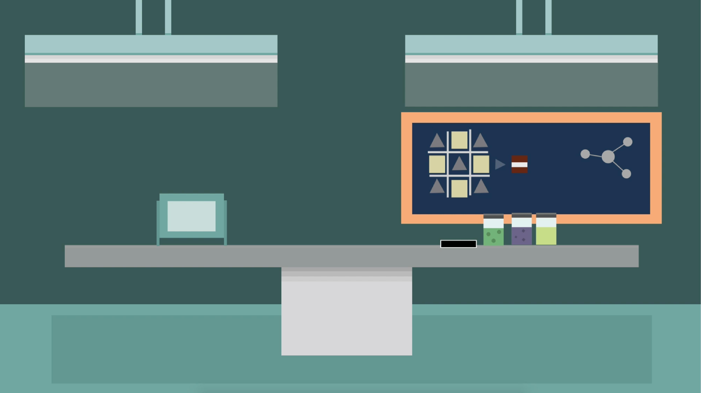
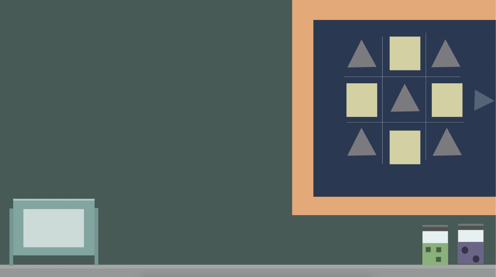
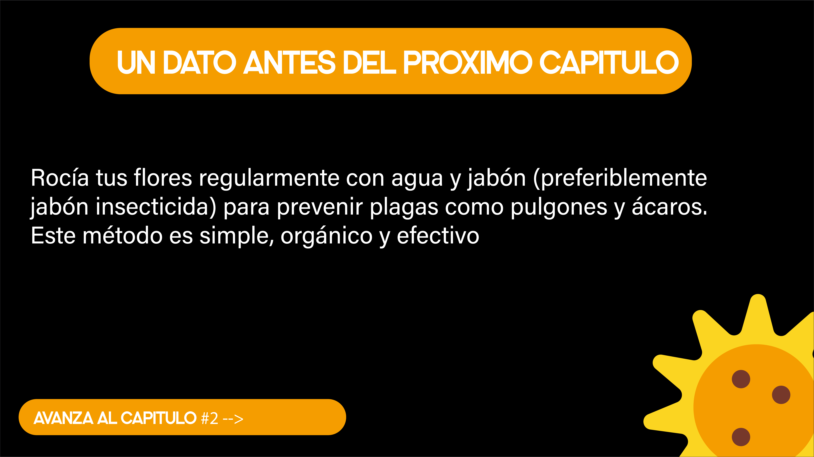
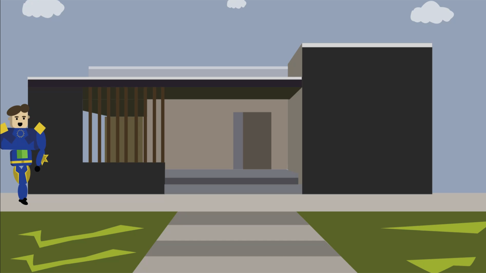
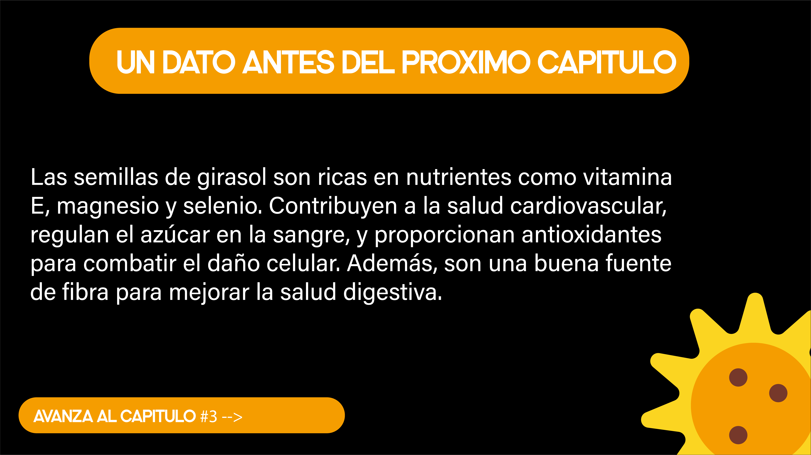
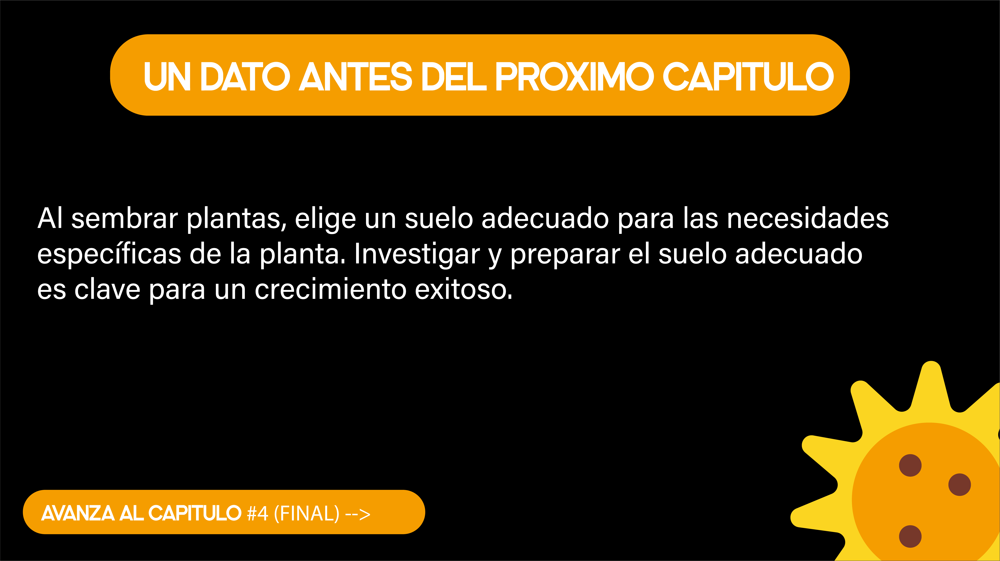

Para volver a la pagina principal dar "CLICK" en el icno de casa
Para activar la interactividad dar "CLICK" en los circulos punsantes
QR INSTAGRAM

En un día soleado, Max se encontraba inmerso en su laboratorio, enfrascado en la creación de su próximo gran invento. De repente, el estridente sonido del teléfono lo saca de su concentración.

Al contestar, una voz temblorosa lo golpea con la noticia de que su amada novia Lily está enferma, víctima de un peligroso virus que la consume desde adentro.


Sin pensarlo dos veces, Max deja todo atrás y se apresura hacia la casa de Lily, impulsado por la urgencia y el miedo que lo embargan ante la posibilidad de perderla.
Al llegar, encuentra a Lily enferma y agotada. Sin demora, extrae una muestra de sangre para analizarla en su laboratorio en busca de una cura.
Max descubre la verdadera naturaleza del virus "MTG-01-VERTIX" y se embarca en una carrera contrarreloj en busca de una solución.
Con la leyenda de la Flor del Sol en mente, Max y Orwell parten en busca de la planta milagrosa.

Guiados por miles de girasoles luminosos, los hermanos se abren paso hacia la cueva donde se rumorea que se encuentra la Flor del Sol
La confrontación entre Max y Orwell culmina en una intensa lucha por los recursos de la selva, donde se ponen a prueba no solo su fuerza física, sino también sus convicciones y valores más profundos.
Max emerge victorioso y extrae una muestra del néctar de la Flor del Sol con la esperanza de salvar a Lily y a la ciudad.
Max trabaja febrilmente en su laboratorio para sintetizar el antídoto, que finalmente logra producir.

Con el antídoto en mano, Max acude al hospital donde las esperanzas de la ciudad descansan en él.
Con Lily a salvo y la ciudad protegida, Max encuentra en la naturaleza la verdadera fortaleza y en la bondad el verdadero heroísmo. Con renovada esperanza, contempla el horizonte, sabiendo que la aventura continúa.